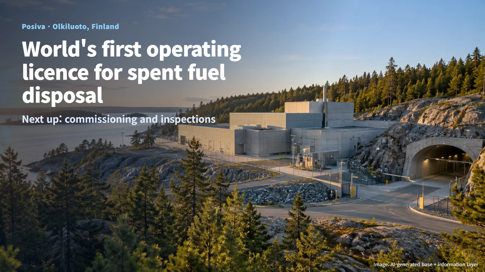
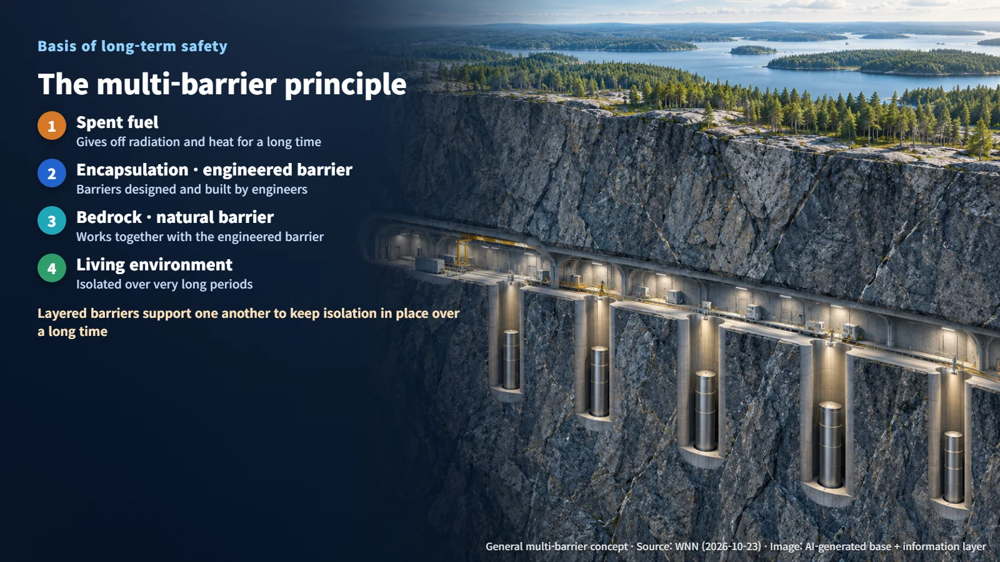
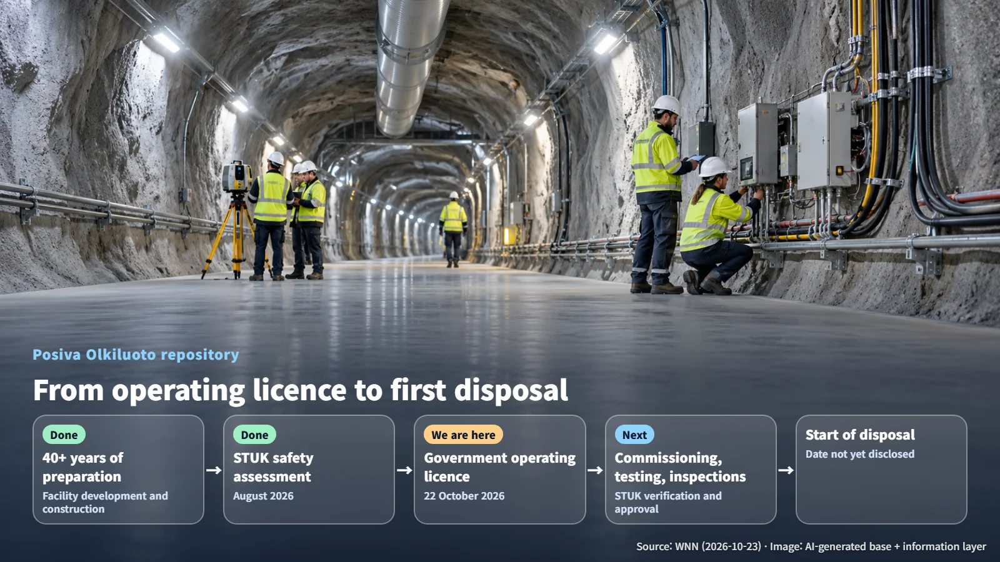

Finland · Spent Fuel Disposal
Finland Grants the World's First Operating Licence for a Spent Fuel Repository: What Comes Next for Posiva
Finland has licensed Posiva's Olkiluoto repository to operate; commissioning, testing, inspections and STUK approval come before the first disposal.
Whenever nuclear power comes up, one question follows close behind: "Where does the used fuel end up?" Spent nuclear fuel, the fuel removed from a reactor after it has done its job, keeps giving off radiation and heat for a very long time. Keeping it safely isolated from the places where people live has always been one of the central challenges of nuclear energy. In Finland, one answer to that question has just moved into a new stage. Let's walk through what an operating licence means, how far the project has come, and which steps remain.

October 22: The World's First Operating Licence
On 22 October 2026, the Finnish government granted Posiva an operating licence for its spent fuel encapsulation and final disposal facility at Olkiluoto. World Nuclear News (WNN) reported the decision the following day, 23 October, and Posiva described it as the world's first operating licence for the final disposal of spent nuclear fuel. An operating licence is the legal authorisation, granted by the government, to run the facility. In other words, the project now holds the formal permission it needs, and the remaining work focuses on showing in practice that the facility performs as designed.
The two key words in the facility's name explain what it does. Encapsulation is the process of placing spent fuel inside a robust container and sealing it tightly. Final disposal means isolating that sealed fuel permanently, as its lasting destination. Picture fuel being loaded into containers at the surface, and those containers then being carried down and set in place deep inside the bedrock. That single image captures the role of the whole facility.
Four Decades of Preparation and STUK's Safety Assessment
Posiva is owned by two companies, TVO and Fortum. It has developed this facility to safely dispose of the spent fuel produced by its two owners.
The preparation has taken more than 40 years, a span longer than a full generation, devoted to planning and review for a single facility. At the end of that long road, the key basis for the government's decision was the safety assessment issued in August by STUK, the Finnish Radiation and Nuclear Safety Authority. STUK is Finland's nuclear safety regulator, and its experts review whether a facility meets the safety requirements.
The sequence works like this: the operator develops the facility, the regulator assesses its safety, and the government decides on the licence based on that assessment. A thick safety assessment report resting on the table where the government makes its decision is the defining scene of this licence.
Bedrock and Engineered Barriers: The Multi-Barrier Principle
The long-term safety of the repository rests on the multi-barrier principle. The bedrock serves as a natural barrier, and barriers designed and built by engineers serve as an engineered barrier. Working together, they keep radioactive materials isolated from the living environment over very long periods.
Think of valuables locked inside a safe, and that safe placed inside a solid building. Each layer of protection does its own job while supporting the others, so the overall isolation draws on several independent lines of defence at once. This layered approach is what allows the system to be designed to maintain isolation over a long time.

With this operating licence, Posiva's project has moved beyond construction into a new phase. In this phase, actual operating procedures and inspection results are linked together with the long-term safety case. The safety logic established through design will now be backed up by operating records from the site.
Next Steps: Commissioning, Inspections and the Start of Disposal
Posiva has clearly set out what follows the operating licence. Before disposal of spent fuel begins, the facility must complete commissioning, testing and inspections, and then receive STUK's verification and approval. Having earned the authorisation to operate, the project is now in its final check-out stretch, confirming item by item that the equipment works as planned.
Commissioning is the process of running newly built equipment under conditions close to real operation to confirm its performance. At this stage, the team checks whether the equipment that seals fuel into containers and the equipment that carries those containers to the disposal area move exactly as designed, and whether operating procedures are followed on site. Once STUK verifies and approves the results, actual disposal will begin.

A specific start date for disposal has not been disclosed. Posiva has said it will secure the time needed to confirm safety in the final stage as well. For readers following the story, three points are worth watching from here: the progress of the remaining commissioning, testing and inspections; the outcome of STUK's verification; and the actual disposal start date together with the scope of operating data made public.
For other countries to draw on this experience, they will need their own demonstration tailored to their site geology, fuel characteristics and regulatory requirements. The safety of a repository is proven step by step, for that particular ground and that particular fuel.
To the long-standing question of what to do with spent nuclear fuel, Finland has offered an answer in the form of an operating licence, reached through more than 40 years of preparation and a safety assessment by its regulator. Following the remaining verification steps one by one will make it even clearer that spent fuel disposal is a concrete undertaking, carried out and verified stage by stage.